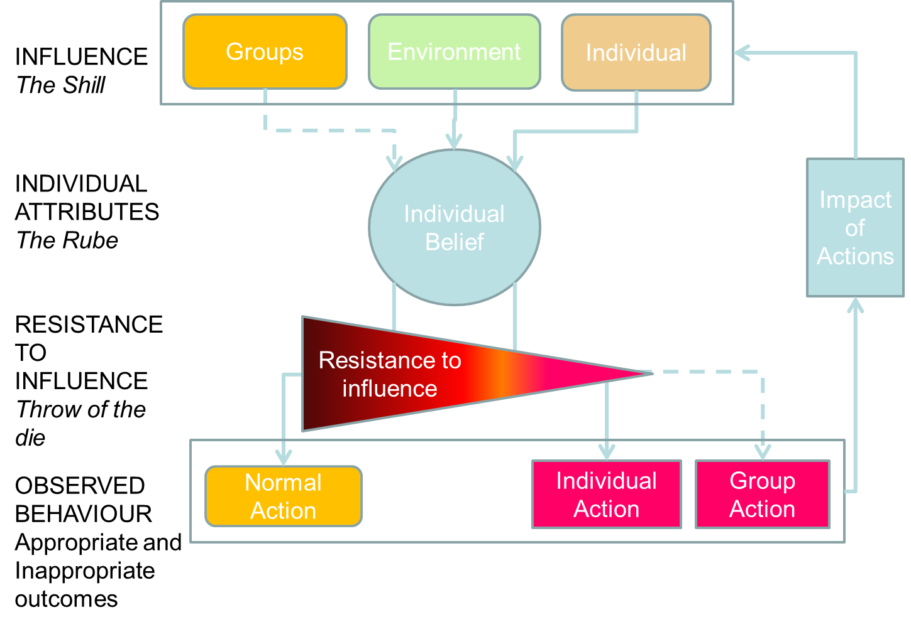

This diagram shows how individuals, groups of individuals, or the environment can influence the behaviour of an individual. If the influence aligns with their own belief, then resistance to change their action is likely to be low, and conversely. The net result is either a change in action or carrying on as normal.
The motivation module allows for peeps to have beliefs and attributes, and for these to be passed to other peeps. To allow for this, each peep gains the following fields:
Characteristics have the following properties:
For each interaction, there are two peeps involved. The "Shill" is the peep that is passing on their opinion while the "Rube" is the peep that is updating their opinion.
Interactions have both a cause and effect. The cause is the characteristic property of the shill which is driving the change. The effect is the characteristic shared by both the shill and rube which is being changed in the rube.
As an example, consider the case of Dave and Elise. Dave, the shill, is attempting to convince Elise, the rube, that the Beatles are the best band in history. In this case, the cause characteristic is his charisma; the effect characteristic is the belief "the Beatles are the best band in history". His charisma drives the change in her belief.
This module has been tested in a case study of a hypothetical terrorist attack on Central Station, Sydney, for both avoidance of the terrorist and in the evacuation process. This simulation modelled a number of observed behaviours, including some staying to help and others being guided by staff during the evacuation.